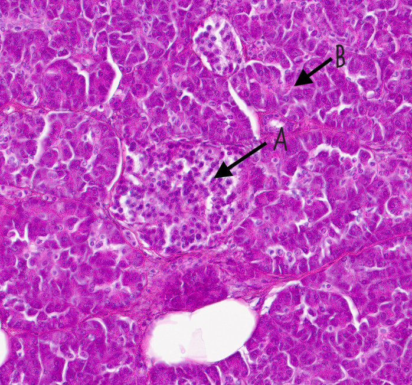
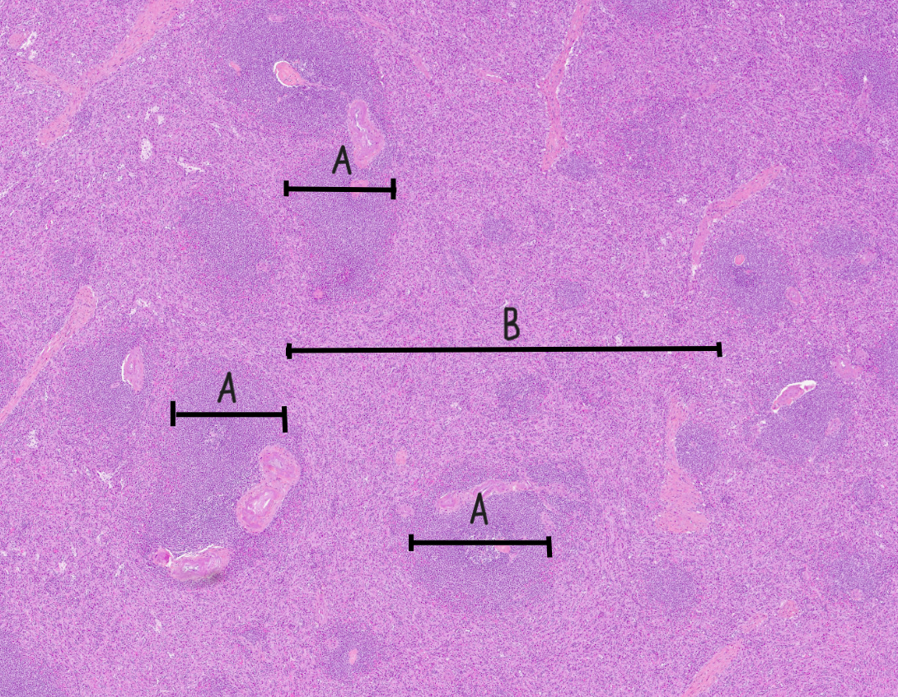
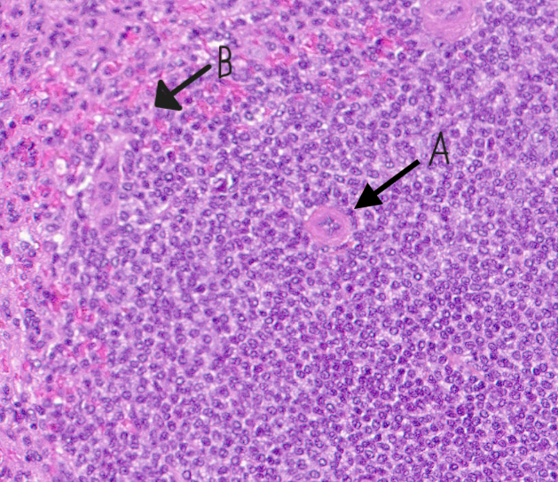
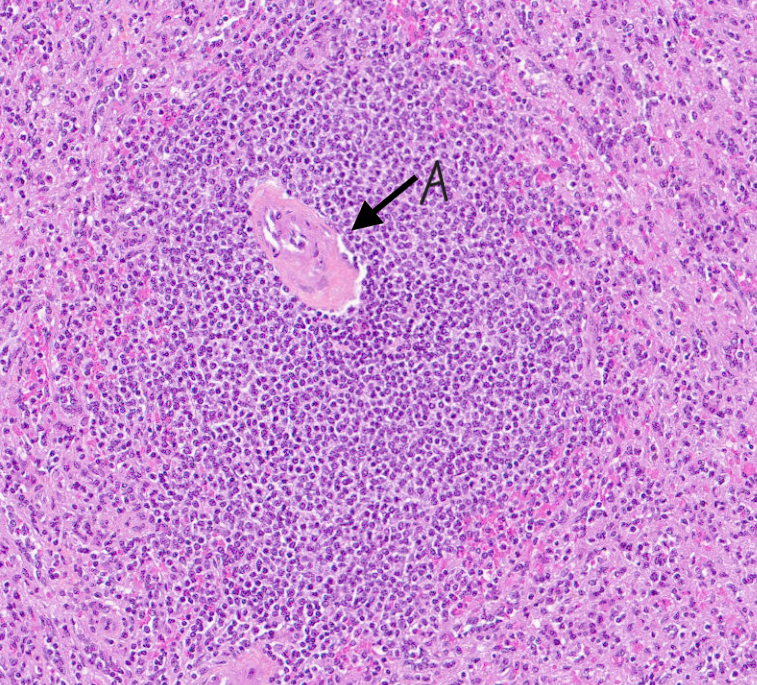

Digitale histologibilder av bukspyttkjertel.
Pancreas med langerhanske øyer.

Pancreas. A: Langerhansk øy, endokrint vev. B: Eksokrint vev.
Milt.

Milt. A: Hvit pulp. B: Rød pulp.

Milt. A: PALS. B: Marginal sone.

Milt. A: Germinalt senter med pulpaarterie.